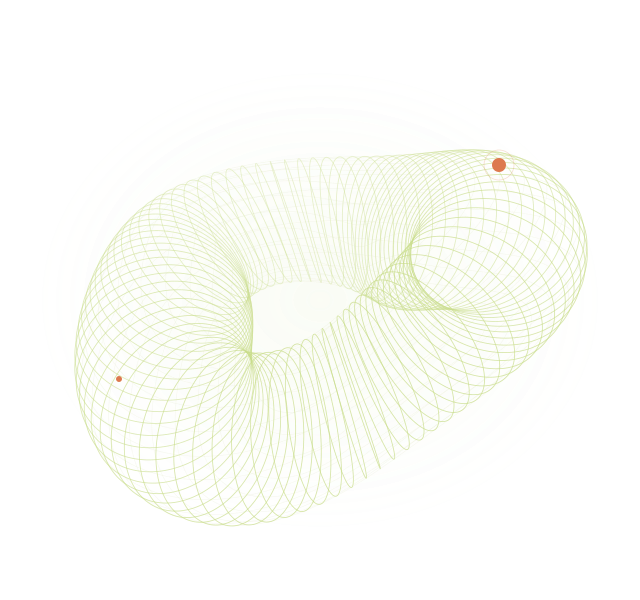

01 / CURRENT EXPLORATION 复现探索中
CTA · 期货 · 时间序列非线性动量，
非线性动量，
与中国市场的相遇。
围绕非线性动量论文开展复现，尝试把研究思路放到中国期货市场数据中理解与检验。
论文复现 / 方法实现
金融学出发，金融科技在读。
用数据探索市场规律，用持续练习回应好奇心。

我是田祎，目前在中国人民大学苏州校区智慧治理学院攻读金融科技专业硕士。本科就读于西南财经大学证券与期货学院，专业为金融学。
从企业融资的实证研究，到股指期货与市场波动，再到现在的期货动量策略，我逐渐把兴趣聚焦在 CTA 与系统化投资。我喜欢把一个金融问题拆成可以理解、实现和检验的步骤。
研究之外，我打网球、做力量训练，也喜欢吉他和动手设计。对我而言，认真做研究与认真过生活，有着相通的节奏。
已有的研究实践，和正在追问的问题。
每一段经历，都有各自的起点与进度。
围绕非线性动量论文开展复现，尝试把研究思路放到中国期货市场数据中理解与检验。
把量化学习整理成代码与笔记：从数据处理、经典金融模型，到策略回测与因子研究。
以 GARCH-M 模型分析上证 50 股指期货与股市波动，理解波动聚集与风险溢价。
从企业竞争环境出发，用 A 股企业样本研究产品市场竞争与债务融资成本之间的关系。
显示全部 4 项研究与实践
苏州校区 · 智慧治理学院 · 金融科技专业硕士
将金融学基础与数据分析、代码实践结合，聚焦 CTA 与期货动量研究。
固定收益部 · 实习生
参与 eBond 线上债券交易平台的机构客户服务与推广，理解金融产品与机构业务需求。
证券与期货学院 · 金融学（证券与期货方向）
完成公司金融与金融时间序列相关实证研究；曾任学院学生会主席、学工部综合事务部部长及吉他社副社长。
用熟悉的方法做扎实的分析，
也为新的问题不断补充工具。
Python · NumPy · Pandas
Matplotlib · SQLite · Jupyter
Matlab · EViews
回归分析 · GARCH-M · 金融数据处理
Backtrader · 因子构建与检验
组合优化 · VaR / CVaR · 绩效分析
非线性动量 · 机器学习量化入门
AI 辅助编程与研究工作流
球场、音乐和日常里的小设计。
不急着抵达，享受一点点进步。
喜欢网球，也在持续练习。发球机、训练视频和每一次反馈，让进步变得具体；力量与功能性训练则让身体跟上想法。
曾任吉他社副社长。数字之外，也喜欢音乐带来的表达与连接。
对服装的纹理、颜色与版型感兴趣。曾为一件燕麦驼色麻花外套细化设计，从花样到针数，体验把想法变具体的过程。
从英语口语到新的研究工具，喜欢有结构的练习，也愿意慢慢补上不熟悉的部分。
对新的问题与交流保持开放
欢迎交流 CTA、期货研究、金融数据分析，
也欢迎聊聊网球、音乐与学习。